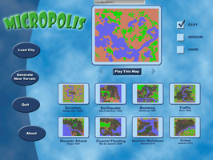
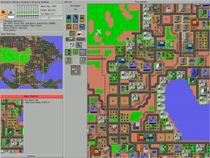

Micropolis
Dieser Artikel wurde für die folgenden Ubuntu-Versionen getestet:
Ubuntu 16.04 Xenial Xerus
Zum Verständnis dieses Artikels sind folgende Seiten hilfreich:
Wer wäre nicht gern Bürgermeister seiner eigenen Stadt? Electronic Arts macht dies nun möglich, indem es die Quellen für das bekannte Aufbauspiel SimCity unter einer freien Lizenz zur Verfügung stellt. Aufgrund von Namenskonflikten heißt das Spiel jetzt Micropolis (auch OLPC SimCity), spielt sich aber fast genauso wie der Klassiker von 1989. SimCity von Maxis war eines der ersten Aufbauspiele für den PC. Für heutige Verhältnisse mit sehr einfacher Grafik, konnte das Spiel dennoch sehr lange am Bildschirm fesseln. Um eine Stadt zu verwalten, muss man Häuser für neue Anwohner bauen, Einkaufsgebiete und Büros schaffen und natürlich die Industrie voranbringen. Das Ganze muss man natürlich geschickt verbinden, so dass sich die Bereiche gegenseitig nicht negativ beeinflussen. Wer will schon direkt neben einem Kohlekraftwerk wohnen?
Für das One-Laptop-Per-Child-Projekt  hat Electronic Arts, die Maxis inzwischen integriert haben, das Originalspiel von 1989 unter eine freie Lizenz gestellt. Mit der GPLv3
hat Electronic Arts, die Maxis inzwischen integriert haben, das Originalspiel von 1989 unter eine freie Lizenz gestellt. Mit der GPLv3  kann nun jeder das Spiel verbreiten oder gar auf der gleichen Codebasis weiterbauen. Einzig der geschützte Name "SimCity" darf nicht dafür verwendet werden. Dies ist auch der Grund, wieso das Spiel nun "Micropolis" genannt wurde, was der Originalname von SimCity während der Entwicklung war.
kann nun jeder das Spiel verbreiten oder gar auf der gleichen Codebasis weiterbauen. Einzig der geschützte Name "SimCity" darf nicht dafür verwendet werden. Dies ist auch der Grund, wieso das Spiel nun "Micropolis" genannt wurde, was der Originalname von SimCity während der Entwicklung war.
|  |  |
| Hauptmenü | Spielszene |
Installation¶
Micropolis kann man über das folgende Paket installieren[1]:
micropolis (universe)
 mit apturl
mit apturl
Paketliste zum Kopieren:
sudo apt-get install micropolis
sudo aptitude install micropolis
Anschließend kann das Spiel über den Menüeintrag "Spiele -> Micropolis" gestartet werden.
Alternativ steht die Java Version des Spiels zur Auswahl: Micropolis. 
Problembehebung¶
Die folgenden Fehler sind bekannt:
Zu hohe Auflösung. - Das Spiel hat eine feste Auflösung von 1200x900 Bildpunkten, was wahrscheinlich bei vielen Benutzern nicht tragisch ist, aber einige sehen somit nicht das ganze Geschehen.
Num-Lock-Problem. - Während des Spiels darf Num-Lock nicht aktiviert sein. Falls doch, reagiert die Maus nicht mehr auf Klicks.
Es kann sein, dass die Overlays nicht funktionieren, mit denen man sich die Statusinformationen über die Gebiete einholen kann. Dann kann man die Java Version des Spiels verwenden, welche eine installierte Java Laufzeitumgebung benötigt. Man kann dann das Spiel mit:
java -jar Micropolis
starten. Alternativ kann man einen Rechtsklick auf die jar-Datei machen und unter dem Reiter "Öffnen mit" das OpenJDKJava Runtime auswählen. Allerdings kann es sein, dass dann der Sound nicht funktioniert, aber der ist für das Spiel nicht notwendig.
Alternativen¶
Es gibt neben Micropolis noch einige andere offenen Alternativen. LinCity kommt dabei am ehesten an das alte Sim City heran. Die Entwicklung wurde aber inzwischen eingestellt. Als Nachfolger gibt es LinCity-NG, welches bereits eine isometrische 3-D-Ansicht bietet und grafisch einiges mehr hermacht. Ebenso in der Entwicklung ist OpenCity, welches auch eine schöne 3-D-Ansicht bietet. Alle drei Spiele befinden auch in den offiziellen Paketquellen:
Tipps¶
Die Desaster können im Menü abgestellt werden.
Grundstückspreise können mit Begrüunug kontrolliert werden, im Zentrum steigen die Grundstückspreise mit dem Verkehr.
Die Overlays erlauben sinnvolle Stadtplanung. Häuser sollten im grauen Bereich der Grundstückspreise liegen, Geschäftsgebäude im Roten, die Industrie ist am wenigsten anspruchsvoll.
Man kann Bahngleise anstatt von Straßen verbauen um die Verkehrsdichte zu reduzieren.
Die Grundstückspreise sind der wichtigste Faktor, neben den anteilsmäßig benötigten Bebauungen. Davon ca. 25% Industrie, 25% Geschäftsgebäude und 50% Häuser.
Man kann eine Stadt bauen um sie finanziell auszusaugen, sie abreißen und dann mit dem Geld eine neue Stadt bauen.
Eine Beispielstadt kann hier:Beispiel.cty
heruntergeladen werden.

Infobox¶
| Micropolis | |
| Originaltitel: | SimCity |
| Genre: | Wirtschaftssimulation |
| Sprache: | |
| Veröffentlichung: | 1999 / 2008 |
| Publisher: | Maxis |
| Systemvoraussetzungen: | - |
| Medien: | Download |
| Strichcode / EAN / GTIN: | - |
| Läuft mit: | nativ |
- Erstellt mit Inyoka
-
 2004 – 2017 ubuntuusers.de • Einige Rechte vorbehalten
2004 – 2017 ubuntuusers.de • Einige Rechte vorbehalten
Lizenz • Kontakt • Datenschutz • Impressum • Serverstatus -
Serverhousing gespendet von